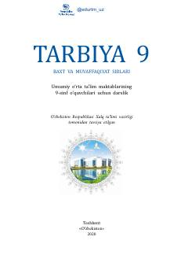

T99-sinf o'quvchilari uchun tarbiya fani darsligi.
Mazkur darslik umumiy o'rta ta'lim maktablarining 9-sinf o'quvchilari uchun mo'ljallangan bo'lib, yashashdan maqsad, ilm-ma'rifat, innovatsiya, orzu va maqsadlar, tadbirkorlik hamda boylikdan foydalanish mezonlari kabi mavzularni qamrab oladi. Kitob yoshlarda milliy va umuminsoniy qadriyatlarni shakllantirish, mustaqil hayotga tayyorlash va shaxsiy rivojlanish ko'nikmalarini o'rgatishga xizmat qiladi.